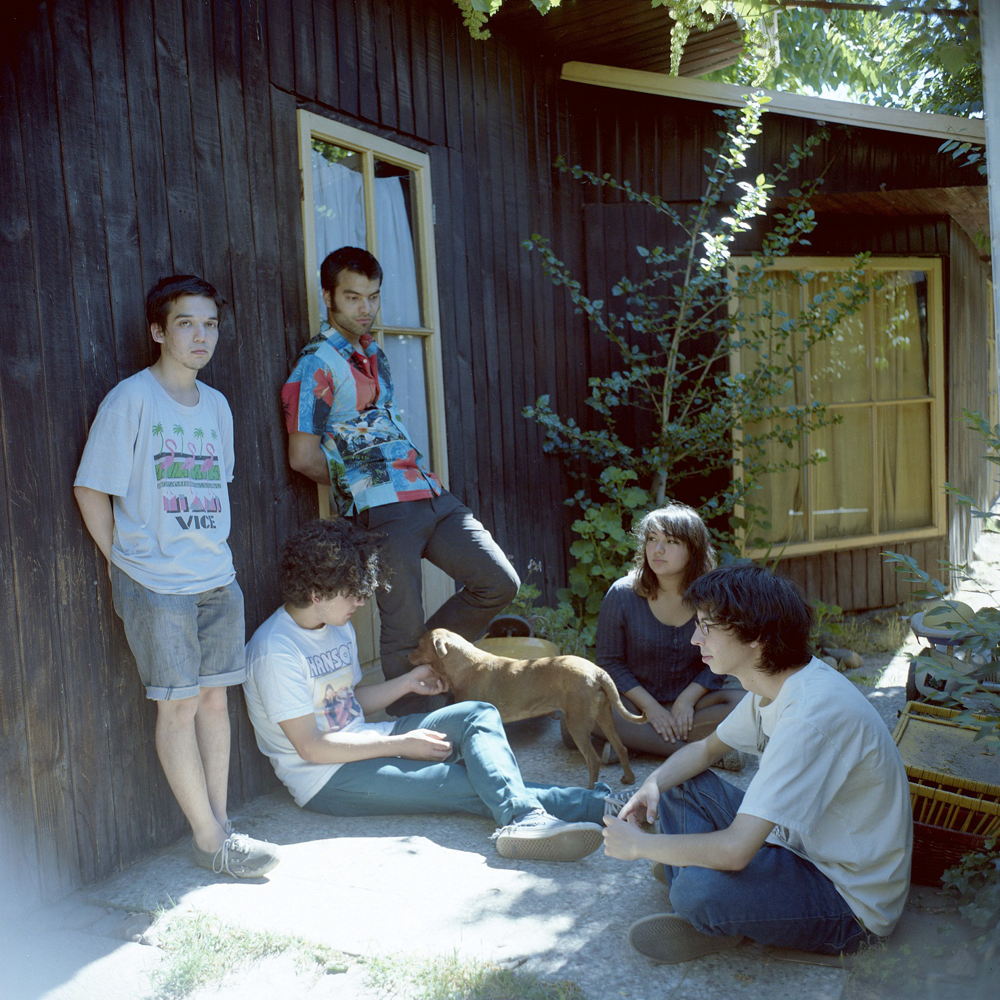

Escucha “Temporada”, el nuevo disco de Patio Solar
El álbum, que cuenta con nueve canciones, es el primer LP editado por Piloto, y desde hoy se encuentra disponible a través de streaming.
Tras casi un año de trabajo, “Temporada” de Patio Solar verá la luz en formato digital. Este es el segundo larga duración de la banda y su primer disco grabado y editado junto a Piloto. Las nueve canciones se pueden escuchar vía streaming de forma gratuita.
“Temporada” mantiene las líricas emocionales presentadas por Patio Solar en sus trabajos anteriores como el single Pintura, pero ahora la agrupación amplía su paleta sonora, mezclando pop de guitarras brillantes, elementos post punk, tracks experimentales, y el ya reconocido espíritu dream pop, del quinteto proveniente de la comuna de La Florida.
Patio Solar está liderado por Claudio Gajardo (hijo del bajista Claudio Banegas, integrante de reconocidas bandas del under durante los años ‘80 y ’90, como Los Parkinson). Junto a él, está Yaney Salgado en guitarra y coros, Camilo Jiménez en bajo, Javier Poduje en batería y Franco Perucca en teclados. Desde junio de 2014 trabajaron en su segundo LP “Temporada” bajo la producción de Alex Rojas. El disco se puede escuchar por streaming en el siguiente link: http://piloto.club/temporada/.
“Temporada” es además el primer álbum editado por Piloto, sello que se dio a conocer en noviembre del 2014 y que trabaja además, junto a otras agrupaciones del sector sur de Santiago como son Niños del Cerro, Silabario, Pujem y La Banda Misma.
ADJUNTO:
FOTO GRANDE BANDA PATIO SOLAR
FOTO GRANDE BANDA PATIO SOLAR HORIZONTAL
FOTO CARATULA ALBUM "TEMPORADA"
PILOTO: Sitio Web Facebook Twitter Instagram Soundcloud Youtube
✈ comunicaciones@piloto.club ✈ contacto@piloto.club ✈